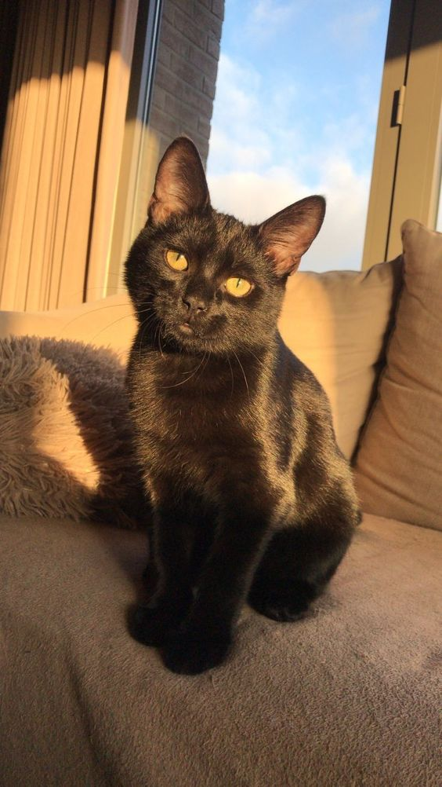

Los gatos persas de pelo largo son gatos fornidos de tamaño mediano con una cabeza muy grande en proporción a su cuerpo. Tienen la cabeza redondeada y ancha, las orejas pequeñas y separadas, y la cara corta y despejada. Los ojos son grandes y redondos y tienen un color vivo. Las patas son cortas, gruesas y fuertes, con zarpas grandes y redondeadas y dedos copetudos. La cola es corta y tupida. El pelaje es largo, grueso y exuberante, con una capa interna densa y suave El gato persa presenta una gran variedad de patrones y colores.
El gato persa de pelo largo es tranquilo y cariñoso. Es apacible y no tan activo como algunas razas de pelo corto. En general, no le importa vivir solo y se muestra bastante contento de ser gato único. Le basta con estar sentado tranquilo y tener buen aspecto.
Los primeros antepasados documentados del gato persa se importaron en el siglo XVII de Irán a Italia y de Angora (actual Ankara, en Turquía) a Francia. Los gatos persas tenían el pelaje gris, mientras que los de Angora eran blancos. Al final, los descendientes de esos gatos de pelo largo llegaron a Gran Bretaña en el siglo XIX. Aquellos primeros persas eran bastante diferentes de los gatos que ganan premios en las exhibiciones actuales: tenían la cara más larga, las orejas más grandes y una forma más larga. Con el paso de los años, la reproducción selectiva ha dado como resultado el cuerpo fornido y la cara plana que conocemos hoy en día. El pelaje no solo es largo, sino que tiene un manto inferior muy grueso que requiere muchos cuidados por parte del dueño: el gato no puede mantenerse sin enredos por sí solo.
El gato persa de pelo largo necesita cuidados diarios para mantener su largo y grueso pelaje sin enredos ni nudos. Si no se le mantiene sin enredos puede que termine necesitando el corte de todo el pelaje para que el manto vuelva a crecer.
Alimentación: Siempre de calidad y adaptada a sus etapas de vida. Los gatitos tienen necesidades nutricionales distintas a las de los gatos adultos, centradas en fomentar su correcto desarrollo y crecimiento, y además el número de sus tomas diarias suele ser más frecuente. A partir del año, el gato se considera adulto, y suele necesitar alimentos menos calóricos para evitar el posible sobrepeso, u otras variedades de producto que respondan a un nuevo estadio
Agua:Limpia, en abundancia e idealmente servida en bebederos de acero inoxidable o aluminio. En verano, ubica varios bebederos de estas características en distintos lugares de tu casa, para que tu gato siempre tenga agua a mano si quiere beber.
Arenero:Adquiere un arenero que se adapte bien a sus dimensiones, sobre todo cuando tu gato ya haya alcanzado su etapa adulta. Colócalo en un lugar tranquilo, alejado de la zona de alimentación, bebida y relax. Con ayuda de una pala retira sus deposiciones diarias, y cambia la arena con una frecuencia semanal.
No olvides que los gatos, como ocurre con los perros, también necesitan tener su cartilla de vacunas en regla y pasar por los procesos de desparasitación (interna y externa). Los veterinarios suelen aprovechar estas visitas para realizarle una exploración completa a tu gato.


No hay duda de ello, los gatos son grandes mascotas. Después de todo, ¿qué hay mejor que volver a casa al final de un duro día y escuchar el ronroneo de satisfacción de una adorable bola de pelo?
Los estudios demuestran que las personas con animales de compañía suelen estar más sanas y felices que aquellas que no los tienen, pero recuerda que tener un gato es una gran responsabilidad y un compromiso de por vida.
Cuando estés listo para asumir este compromiso, comprobarás que tener un gato ofrece ventajas como las siguientes:
Se ha comprobado que tener un gato reduce el estrés.
Normalmente los dueños de gatos tienen una tensión arterial más baja que las personas sin mascotas.
Puedes beneficiarte de un sistema inmunológico más fuerte y recuperarte de las enfermedades antes que las personas que no tienen animales de compañía.
Por lo general, los niños que crecen con gatos tienen menos días de enfermedad que aquellos que no tienen mascotas.
Los gatos son muy cariñosos y tienen un gran carácter, pero también valoramos su independencia, es decir, necesitan menos cuidados que otras mascotas.
Los gatos pueden ayudar a las personas a recuperarse más rápido de un trauma emocional, como el fallecimiento de un ser querido.
Tener un gato es muy beneficioso, pero es importante elegirlo detenidamente para estar seguro de que te adaptarás bien a tu esponjoso amigo. Tu gato ideal dependerá de tu estilo de vida y de tus preferencias personales. Por ejemplo, es posible que quieras un gato adulto al que poder acariciar en tu regazo o que tengas en mente un gatito de una raza especial.